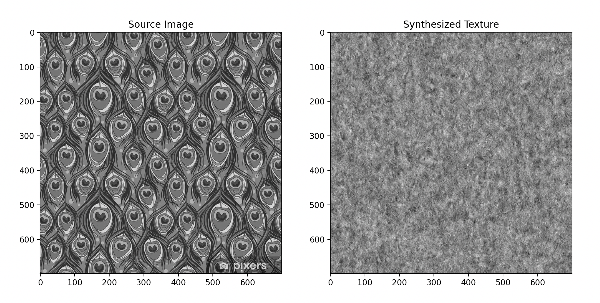

My Approach
I structured my implementation around these key steps:
- Oriented Filter Decomposition: I created a set of oriented filters (4 orientations) to analyze different directional components of the texture.
- Multi-scale Analysis: I decomposed the image into a steerable pyramid with 4 scales to capture features at different resolutions.
- Histogram Matching: I matched the statistical properties of noise to the source texture at each scale and orientation.
- Texture Reconstruction: I synthesized the final texture by reconstructing the pyramid with matched coefficients.
Source Textures
For this project, I worked with two primary example textures: a tiger fur pattern that demonstrates structured, directional features, and a peacock feather pattern that exhibits complex, multi-scale characteristics.
Tiger fur texture: Note the strong directional stripes and natural variation in the pattern
Peacock feather texture: Observe the intricate patterns and iridescent color variations
Understanding Oriented Filters
I designed the oriented filters to detect features at different angles (0°, 45°, 90°, 135°). One interesting discovery I made was that when I sum all oriented filter responses, I get a result equivalent to a Laplacian bandpass filter. This confirmed that my oriented basis was complete.
Tiger texture: Filter responses showing directional components and Laplacian equivalence
Peacock texture: Demonstrating how oriented filters capture different feature directions
Steerable Pyramid Implementation
I broke down the image into different scales and orientations using my steerable pyramid implementation. This allowed me to analyze and modify texture features at multiple resolutions and directions.
Tiger texture: Steerable pyramid decomposition showing scale and orientation bands

Peacock texture: Multi-scale decomposition revealing intricate feather patterns
Histogram Matching Results
Before diving into full texture synthesis, I wanted to ensure my histogram matching worked correctly. This was crucial for maintaining the overall tone and contrast of the source texture.
Tiger texture: Source histogram (left) matched to noise (right)
Peacock texture: Demonstrating histogram matching with complex color patterns
Synthesis Results
Here are the results of my full texture synthesis algorithm:
Tiger texture: Source (left) and synthesized result (right)

Peacock texture: Source (left) and synthesized result (right)